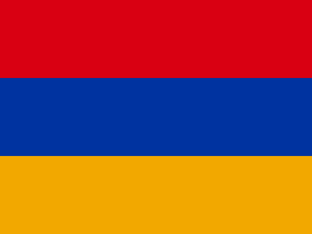
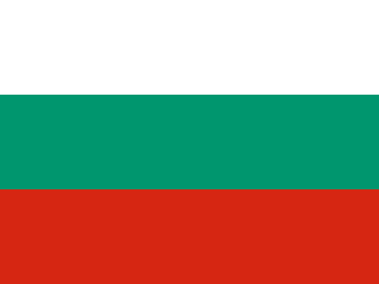
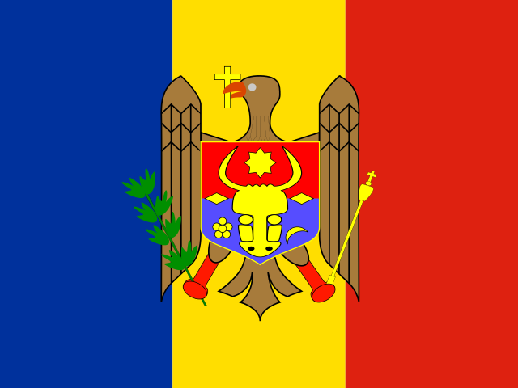
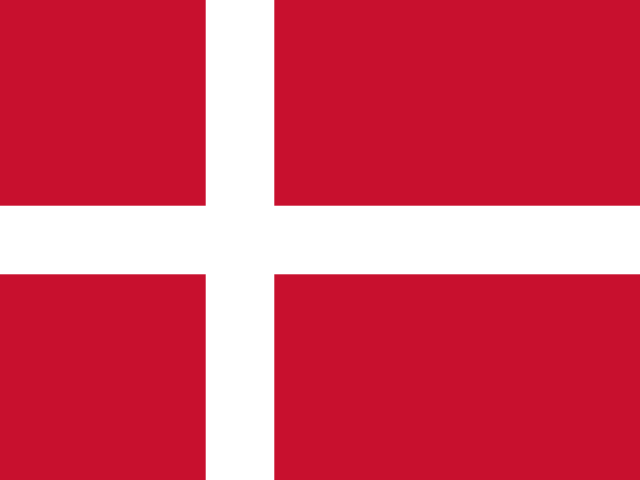
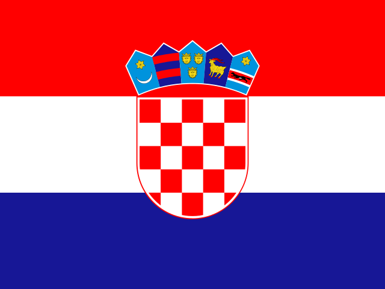

| Competence | Priority score | Potential provider institutions |  Armenia | Bosnia and Herzegovina |  Bulgaria | Estonia | Georgia | Greece | Lithuania |  Moldova | Portugal | Romania | Serbia | Ukraine | Germany |  Denmark | Spain | France | Italy | Netherlands | Norway | United Kingdom | Albania |  Croatia | Hungary | Poland |
|---|---|---|---|---|---|---|---|---|---|---|---|---|---|---|---|---|---|---|---|---|---|---|---|---|---|---|
| M03 Argumentation analysis and repertoire-based legitimation | 9 (3+3+3) | Spain · Complutense University of Madrid · Portugal · NOVA University Lisbon · Romania · University of Bucharest | ○ | ○ | ○ | ◉ | ○ | ◉ | ◉ | ◉ | ★ | ★ | ◉ | ○ | ● | ● | ★ | ● | ● | ○ | ● | ○ | ○ | ○ | ● | ○ |
| M05 NLP, machine learning and language models | 8 (3+3+2) | Germany · GESIS Research Infrastructure · Spain · University of Granada · Spain · University of Huelva · Spain · Complutense University of Madrid · Norway · University of Oslo · Poland · University of Jagiellonian | ○ | ○ | ○ | ◉ | ○ | ◉ | ◉ | ◉ | ◉ | ◉ | ◉ | ○ | ★ | ● | ★ | ● | ● | ○ | ★ | ○ | ○ | ○ | ● | ★ |
| M09 Experiments, interventions (pre-bunking) and eye-tracking | 8 (3+2+3) | Germany · GESIS Research Infrastructure · Norway · University of Oslo · Romania · Babeș-Bolyai | ○ | ◉ | ○ | ◉ | ○ | ◉ | ◉ | ○ | ◉ | ★ | ◉ | ○ | ★ | ● | ● | ● | ○ | ○ | ★ | ○ | ○ | ○ | ● | ● |
| M15 Data infrastructure, access and data donation (DSA art. 40, FAIR) | 7 (2+3+2) | Germany · GESIS Research Infrastructure · Italy · University of Naples Federico II · Italy · Parthenope University of Naples · Norway · University of Oslo · Poland · University of Jagiellonian · Portugal · Cenjor Journalism Training Centre · Portugal · NOVA University Lisbon | ○ | ○ | ◉ | ◉ | ○ | ◉ | ◉ | ○ | ★ | ◉ | ◉ | ◉ | ★ | ● | ● | ● | ★ | ○ | ★ | ○ | ○ | ● | ● | ★ |
| M07 Mathematical modelling and fuzzy measures (non-binary polarisation) | 7 (2+2+3) | Spain · Complutense University of Madrid · Poland · University of Jagiellonian | ○ | ◉ | ○ | ○ | ○ | ◉ | ◉ | ○ | ◉ | ◉ | ○ | ○ | ● | ● | ★ | ● | ● | ○ | ● | ○ | ○ | ○ | ○ | ★ |
| M12 Legal-normative and policy analysis (DSA, EMFA) | 6 (3+2+1) | Germany · GESIS Research Infrastructure · Spain · University of Málaga · Spain · Complutense University of Madrid · Hungary · Centre for Social Sciences · Italy · University of Naples Federico II · Italy · Parthenope University of Naples · Moldova · Moldova State University · Poland · University of Jagiellonian · Serbia · University of Niš | ○ | ◉ | ○ | ◉ | ○ | ◉ | ◉ | ★ | ◉ | ◉ | ★ | ◉ | ★ | ● | ★ | ● | ★ | ○ | ● | ○ | ○ | ● | ★ | ★ |
| M01 Social network analysis / community detection | 6 (1+2+3) | Spain · University of Huelva · Spain · University of Málaga · Spain · Complutense University of Madrid · Portugal · Institute of Social and Political Sciences, University of Lisbon | ○ | ○ | ◉ | ◉ | ○ | ◉ | ◉ | ◉ | ★ | ◉ | ◉ | ◉ | ● | ● | ★ | ● | ● | ○ | ● | ○ | ○ | ● | ● | ○ |
| M10 Visual and multimodal analysis | 5 (1+3+1) | Germany · GESIS Research Infrastructure · Germany · University of Munich · Estonia · University of Tartu · Spain · University of Málaga · Spain · Complutense University of Madrid · Greece · University of Athens · Greece · University of Western Macedonia · Norway · University of Oslo · Portugal · NOVA University Lisbon · Romania · University of Bucharest | ○ | ○ | ◉ | ★ | ○ | ★ | ◉ | ○ | ★ | ★ | ◉ | ◉ | ★ | ● | ★ | ● | ● | ○ | ★ | ○ | ○ | ● | ● | ○ |
| M08 Surveys, panels, longitudinal and comparative studies | 4 (2+1+1) | Bosnia and Herzegovina · University of Banja Luka · Germany · GESIS Research Infrastructure · Germany · University of Munich · Denmark · Aarhus · Spain · University of Málaga · France · Catholic University of Lille · Lithuania · Kaunas University of Technology | ○ | ★ | ○ | ◉ | ○ | ◉ | ★ | ○ | ◉ | ◉ | ◉ | ◉ | ★ | ★ | ★ | ★ | ○ | ○ | ● | ○ | ○ | ● | ● | ● |
| M06 Data mining, big data and digital methods | 4 (1+1+2) | Spain · University of Granada · Spain · University of Málaga · Spain · Complutense University of Madrid · Greece · University of Athens · Italy · University of Naples Federico II · Italy · Parthenope University of Naples · Portugal · Institute of Social and Political Sciences, University of Lisbon | ○ | ○ | ◉ | ◉ | ○ | ★ | ◉ | ◉ | ★ | ◉ | ◉ | ○ | ● | ● | ★ | ● | ★ | ○ | ● | ○ | ○ | ○ | ● | ○ |
| M02 Sentiment and emotion analysis | 4 (0+1+3) | Spain · University of Málaga · Spain · Complutense University of Madrid · Greece · University of Athens · Romania · University of Bucharest | ○ | ○ | ◉ | ◉ | ○ | ★ | ◉ | ◉ | ◉ | ★ | ◉ | ○ | ● | ● | ★ | ● | ● | ○ | ● | ○ | ○ | ○ | ● | ○ |
| M16 Comparative political communication on platforms | 3 (1+2+0) | Germany · GESIS Research Infrastructure · Germany · University of Munich · Denmark · Aarhus · Spain · Complutense University of Madrid · France · Catholic University of Lille · Greece · University of Athens · Greece · University of Western Macedonia · Croatia · University of Zagreb · Hungary · Centre for Social Sciences · Norway · University of Oslo · Portugal · Institute of Social and Political Sciences, University of Lisbon · Romania · Babeș-Bolyai · Romania · University of Bucharest · Ukraine · University of Chernivtsi | ○ | ◉ | ◉ | ◉ | ○ | ★ | ◉ | ◉ | ★ | ★ | ◉ | ★ | ★ | ★ | ★ | ★ | ● | ○ | ★ | ○ | ○ | ★ | ★ | ● |
| M04 Content, discourse, framing and representation analysis | 3 (1+2+0) | Germany · GESIS Research Infrastructure · Germany · University of Munich · Denmark · Aarhus · Spain · University of Huelva · Spain · University of Málaga · Spain · Complutense University of Madrid · Greece · University of Athens · Hungary · Centre for Social Sciences · Lithuania · Kaunas University of Technology · Portugal · Institute of Social and Political Sciences, University of Lisbon · Romania · University of Bucharest · Serbia · University of Niš | ◉ | ○ | ◉ | ◉ | ◉ | ★ | ★ | ◉ | ★ | ★ | ★ | ◉ | ★ | ★ | ★ | ● | ● | ○ | ● | ○ | ○ | ● | ★ | ○ |
| M14 Systematic reviews, bibliometrics, scientometrics | 3 (0+1+2) | Germany · University of Munich · Spain · Complutense University of Madrid · France · Catholic University of Lille · Norway · University of Oslo · Serbia · University of Niš | ◉ | ◉ | ◉ | ◉ | ◉ | ◉ | ◉ | ◉ | ◉ | ◉ | ★ | ◉ | ★ | ● | ★ | ★ | ● | ○ | ★ | ○ | ○ | ○ | ● | ● |
| M11 Ethnography and qualitative methods | 3 (0+1+2) | Estonia · University of Tartu · Georgia · Georgian American University · Italy · University of Naples Federico II · Lithuania · Kaunas University of Technology | ○ | ◉ | ○ | ★ | ★ | ◉ | ★ | ◉ | ◉ | ◉ | ◉ | ○ | ● | ● | ● | ● | ★ | ○ | ● | ○ | ○ | ○ | ● | ● |
| M13 Historical analysis, memory and archives | 2 (0+1+1) | Armenia · National Academy of Sciences of Armenia · Bulgaria · University of Sofia · Spain · University of Málaga · Georgia · Georgian American University · Serbia · University of Niš · Ukraine · University of Chernivtsi | ★ | ◉ | ★ | ○ | ★ | ◉ | ◉ | ○ | ◉ | ◉ | ★ | ★ | ● | ● | ★ | ● | ○ | ○ | ○ | ○ | ○ | ○ | ● | ○ |
 Bosnia and Herzegovina
Bosnia and Herzegovina Estonia
Estonia Georgia
Georgia Greece
Greece Lithuania
Lithuania Portugal
Portugal Romania
Romania Serbia
Serbia Ukraine
Ukraine Germany
Germany Spain
Spain France
France Italy
Italy Netherlands
Netherlands Norway
Norway United Kingdom
United Kingdom Albania
Albania Hungary
Hungary Poland
Poland★ potential provider · ◉ priority beneficiary · ● beneficiary · ○ to be mapped. Score combines interpretive priorities with scarcity in the source mapping; it is not measured member demand. Availability and training capability remain to be confirmed.
Institutional planning view. Allocations and targets are proposals, not confirmed commitments. Personal information and individual invitation records are not published.